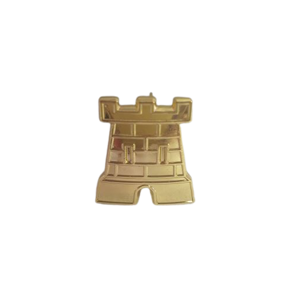

La Namuroise
Témoignage de Joël Leclercq
En septembre 1986, « lors de cette période de troubles et de ténèbres, un rayon de lumière jaillit et naquis la régionale Namuroise la bien nommée. Gauthier Broze, fondateur incontesté, décida que les Namurois devaient tenir tête aux autres régionales et leur démontrer ce que valait la ténacité des autochtones. » Ce dernier fût calotté avant la rentrée pour pouvoir fonder la Namuroise. La date de création fut choisie lors d’une après-midi au cercle Droit, Gauthier Broze, Joël Leclercq et d’autres encore discutaient tranquillement et décidèrent de choisir le 19 février 1986 car il s’agissait de la date d’anniversaire de Gauthier Broze. Avant cela, les namurois passaient baptême et calotte dans d’autres régionales, le temps de la RAN, la Régionale Authentique Namuroise. Le premier Namurois à porter une calotte est Serge Fievet. La date étant convenue, il fallait également établir des statuts et des piliers : Respect aux anciens, Misogynie et Brabophagie.
Bien que la misogynie fût appliquée ardemment par certains présidents, il s’agit, en fait, d’un malentendu. À l’époque, les filles se faisaient calotter par un comité inter-régionale composé d’un groupe de filles, la régionale n’avait rien à dire et les critères d’acceptation étaient plus que douteux. La Namuroise avait voté contre ce système mais la mention était passé au CIR. Jusqu’au jour, où, lors d’une corona de filles namuroises, la présidente du passage de calotte n’arrivait pas et Joël Leclercq, quatrième président, décida que c’en était assez, qu’il était le président et il présiderait lui-même la corona. Cela prit du temps mais ce système de coronae passa et les putes* furent remplacés par les macrelles* lors de coronae filles. « L’histoire n’a retenu que nous étions contre les filles ».
La brabophagie, qui ne signifie évidemment pas que nous mangeons des brabos mais bien que nous sommes traditionnellement contre, vient du fait qu’au départ, les flamands qui voulaient passer leur calotte, se fondaient dans une régionale avec laquelle ils avaient des affinités, ensuite, ils ont voulu une brabo qui n’avait rien à voir avec Anvers mais qui était un fourre-tout flamand qui ne ressemblait pas à grand-chose. Ils faisaient leurs trucs dans leur coin et ne participaient pas beaucoup aux activités. « C’était un petit truc de bourges catho-flamands plus intéressés par les galas et autres bals que les guindailles. La Namuroise était le fer de lance de la contestation. »
Anecdote : La Namuroise fut déjà présente sur le site de Namur bien avant celle existant aujourd’hui cependant elle portait à ce moment là des pennes calottes
Confrérie de l’ordre de la caracole (COC)
Récompense remise par le Grand Maître de la COC, qui est le président en fonction de la Namuroise : à la passation celui-ci est fait automatiquement grand-maître de la COC).
Conditions d’obtention : interne pour service exceptionnel rendu à la Namuroise.
Syllabus de Calotte Régionale Namuroise XXXème


Confrérie des amis du beffroi (CAB)
Récompense remise par le grand-Maître de la CAB, qui est le grand-maître namurois en fonction, avec l’avis du comité. Le président namurois est automatiquement vleké de la CAB à la fin de sa présidence.
Sur les boucles du derrière, on place deux caracoles qui se font faces et le blason namuroise. Conditions d’obtention : interne et externe pour service exceptionnel rendu à la Namuroise.
Syllabus de Calotte Régionale Namuroise XXXème
Bitu d'Or
Récompense honorifique remise lors de la soirée des bitus d’or par le président en fonction.
Syllabus de Calotte Régionale Namuroise XXXème
Roi de la bouffe
Remis lors de la journée avant les bitus d’or par le président en fonction pour récompenser le roi de la bouffe.
Syllabus de Calotte Régionale Namuroise XXXème
Les Piliers Namurois
1) LE RESPECT AUX ANCIENS
2) LA MISOGYNIE
3) LA BRABOPHAGIE
(Chaque principe a bien sur un certain fondement dont nul namurois ne peut ignorer)
Le 2ème pilier a été aboli en 2019 par le président en fonction.


 |
 |
 |  |
 |
 |
 |